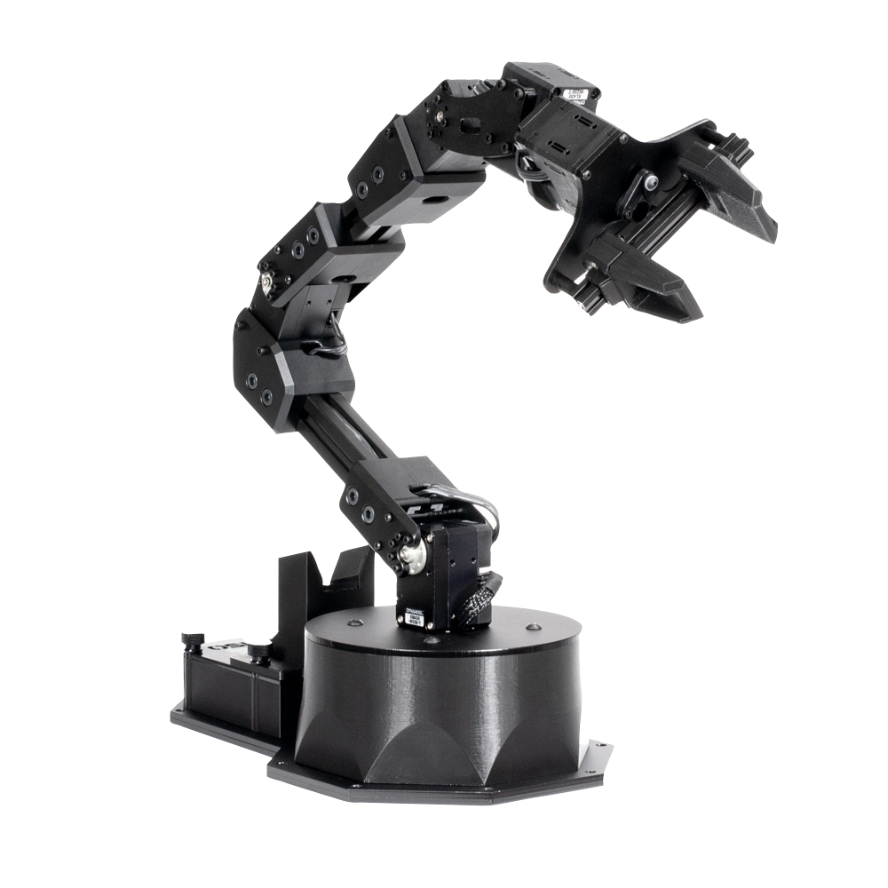

ReactorX-150
The ReactorX-150 Robot Arm belongs to the Interbotix X-Series family of arms featuring the DYNAMIXEL X-Series Smart Servo Motors. The X-Series actuators offer high torque, efficient heat dissipation and great durability all at a smaller form factor over previous DYNAMIXEL servos. The DYNAMIXEL XM430-W350 & DYNAMIXEL XL430-W250 servos offer high resolution of 4096 positions and user definable PID parameters, temperature monitoring, positional feedback, as well as voltage levels, load, and compliance settings are user accessible as well. At the heart of the ReactorX-150 is the Robotis DYNAMIXEL U2D2 which enables easy access to DYNAMIXEL Wizard software as well as ROS. The ReactorX-150 offers 5 degree of freedom and a full 360 degree of rotation.
|  |
|
||||||||||||||||||
Note
* Working Payload for the ReactorX-150 is inside its maximum reach, if intending to use a 100g weight we recommend no more than a 50% extension of the arm.
Default Joint Limits
Default joint limits are the safe range of operation for each joint. These are set in the firmware, defined as degrees from Zero (servo centered).
| Joint | Min | Max | Servo ID(s) |
|---|---|---|---|
| Waist | -180 | 180 | 1 |
| Shoulder | -106 | 100 | 2 |
| Elbow | -102 | 95 | 3 |
| Wrist Angle | -100 | 123 | 4 |
| Wrist Rotate | -180 | 180 | 5 |
| Gripper | 30mm | 74mm | 6 |
Default Servo Configurations
| ID | Joint Name | Servo | Baudrate |
|---|---|---|---|
| 1 | waist | XM430-W350 | 1Mbps |
| 2 | shoulder | XM430-W350 | 1Mbps |
| 3 | elbow | XM430-W350 | 1Mbps |
| 4 | wrist_angle | XL430-W250 | 1Mbps |
| 5 | wrist_rotate | XL430-W250 | 1Mbps |
| 6 | gripper | XL430-W250 | 1Mbps |